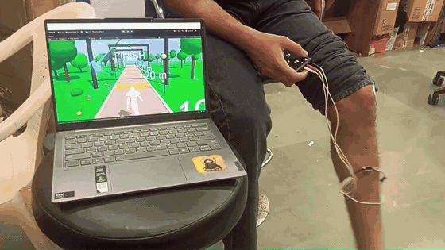
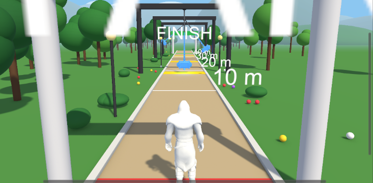

Record
Two electrodes over the calf (gastrocnemius) of the dominant leg. The BioRadio streams channel 1 at 1000 Hz over Bluetooth.
Surface EMG from the calf muscle is filtered in real time and streamed to a Unity game, where each muscle burst moves the character one stride past swinging hammers. The prototype below runs the same filters and step detector in your browser.
Switch the input to “Flex yourself” to drive the walker with your own bursts.
The prototype above runs the same filters and the same step detector as the Python bridge, line for line, on a course built like the one in the Unity game.
Two electrodes over the calf (gastrocnemius) of the dominant leg. The BioRadio streams channel 1 at 1000 Hz over Bluetooth.
A 20–450 Hz band-pass and a 50 Hz notch clean the signal; the Teager–Kaiser energy operator and a 3 Hz low-pass give the envelope.
Thresholds come from the quietest 30 % of the last 30 s: on at mean + 3 SD, off at mean + 1.5 SD. Each rising edge at least 0.45 s after the last counts as one stride.
The Python bridge sends a JSON message over UDP every 50 ms. Unity moves the character 1.4 m per stride; a hammer hit sends it back to the start.
Each team member built one technique. All four ran through the same real-time code on synthetic walking EMG with known step times: 4 noise scenarios × 5 random seeds.
Prashant’s Teager–Kaiser energy operator had the best weighted score and still wins when every category counts equally.
On the real recordings, which have no ground-truth step count, all four techniques recover 52–65 strides per minute, so TKEO’s lead comes mainly from the synthetic benchmark.
Full method in the reportIn the full version a Python bridge reads the BioRadio and drives a Unity 6 game with the same pipeline.


unity folder of the repository in Unity Hub with Unity 6 and press Play.SPACE for one stride, or replay a recording: python bridge/replay_csv_to_unity.py bridge/sample_recordings/Prashant_clean_walking.csv --mode Ipython bridge/bioradio_unity_bridge_v2.py.Butterworth band-pass, 50 Hz notch, rectification and a 3 Hz low-pass. Also the noise analysis and clean-segment selection.
151-tap FIR band-pass, an adaptive canceller that tracks the 50 Hz hum, and a 200 ms moving RMS. Also the real-time BioRadio bridge.
db4 wavelet on 512-sample blocks with soft thresholding. Also the synthetic benchmark and the ranking of the four techniques.
The energy operator that detected steps best, now driving the game. Also the Unity game: course, hammers and controller.